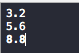

Q1:What's the difference between int,long, float, double and char?
Q2:See this code and write down the output
Q3:see this code and write down the output
if input 1,output_______?
if input 3,output_______?
if input 5,output_______?
if input 0,output_______?
Q4:Programming: input A and B,output the value of A+B.
For example : input 33 and 52 output 85
Q5:Programming: input A and B,output the value of A+B.
For example : input 3.2 and 5.6 output 8.8(tips:"%.1f")

Q6:Programming: input a number(number > 2),if the number is prime number print "YES" else print "NO";
For example : input 3 print YES
For example : input 9 print NO
For example : input 11 print YES
Q7:Programming: print the Fibonacci sequence(the first 20)
For example :